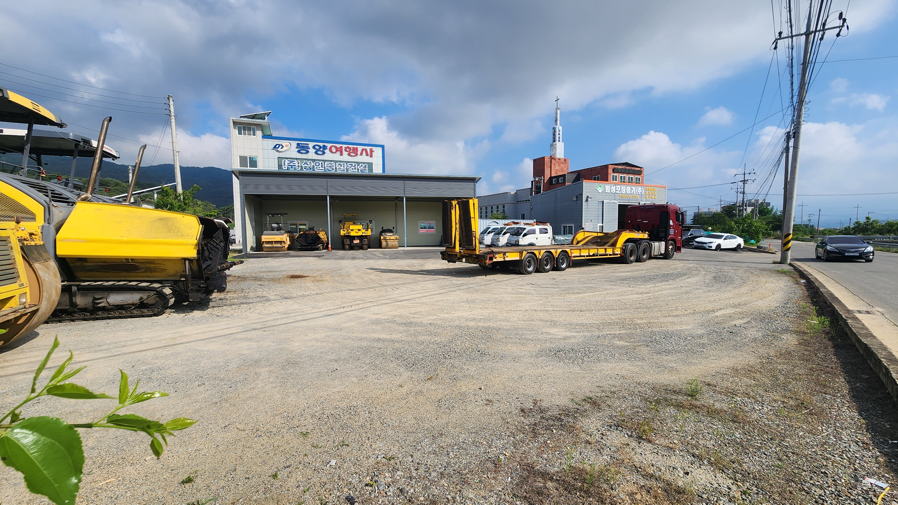
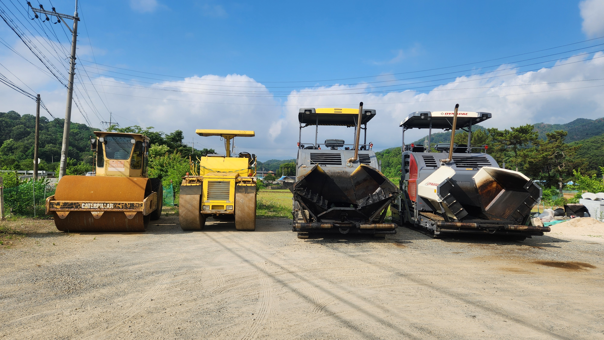
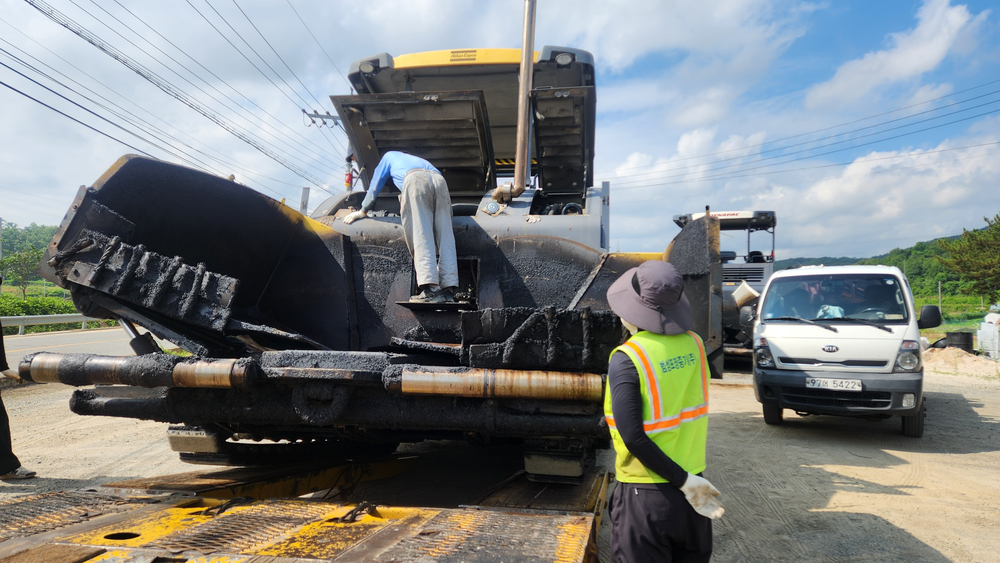
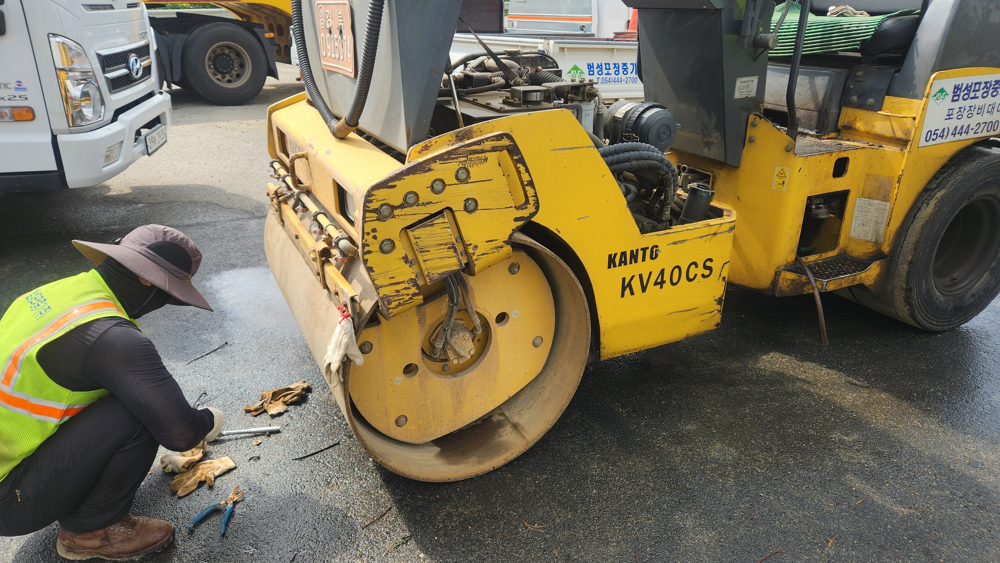
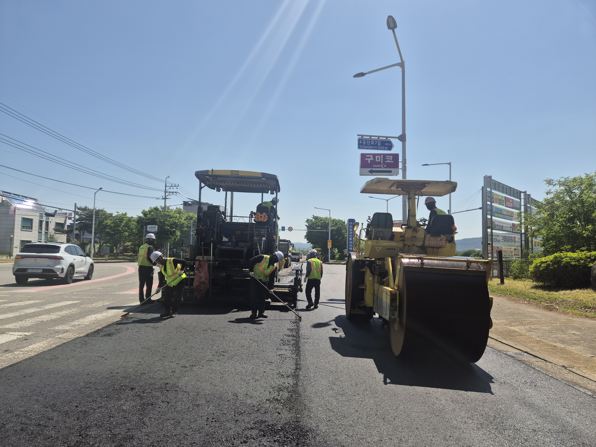
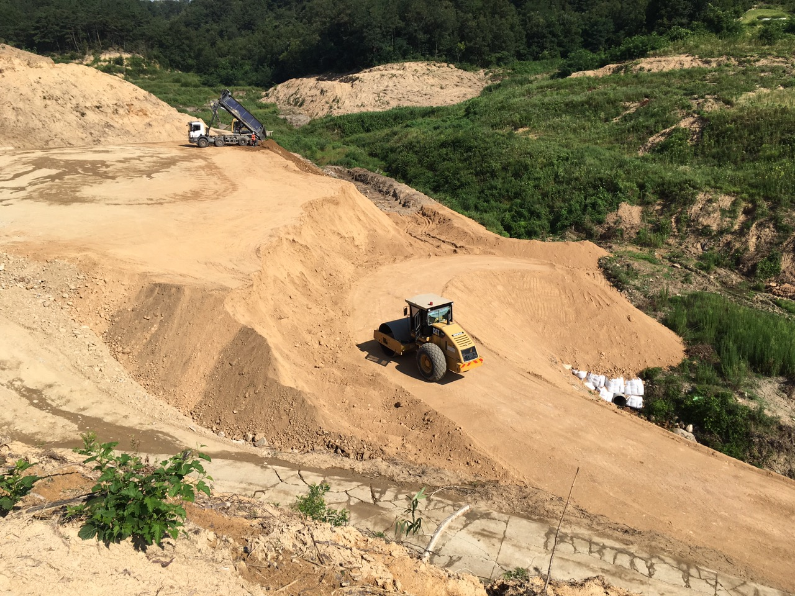
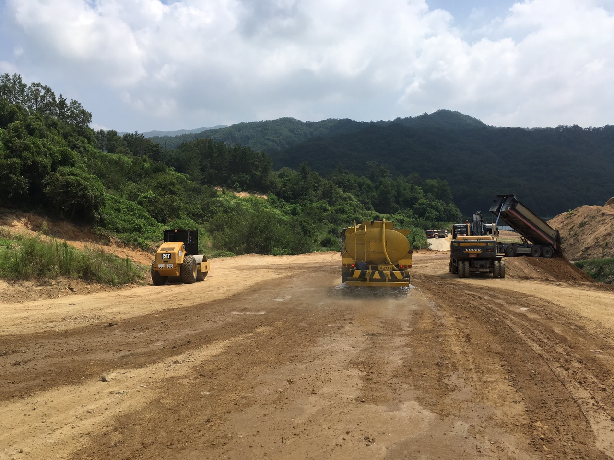
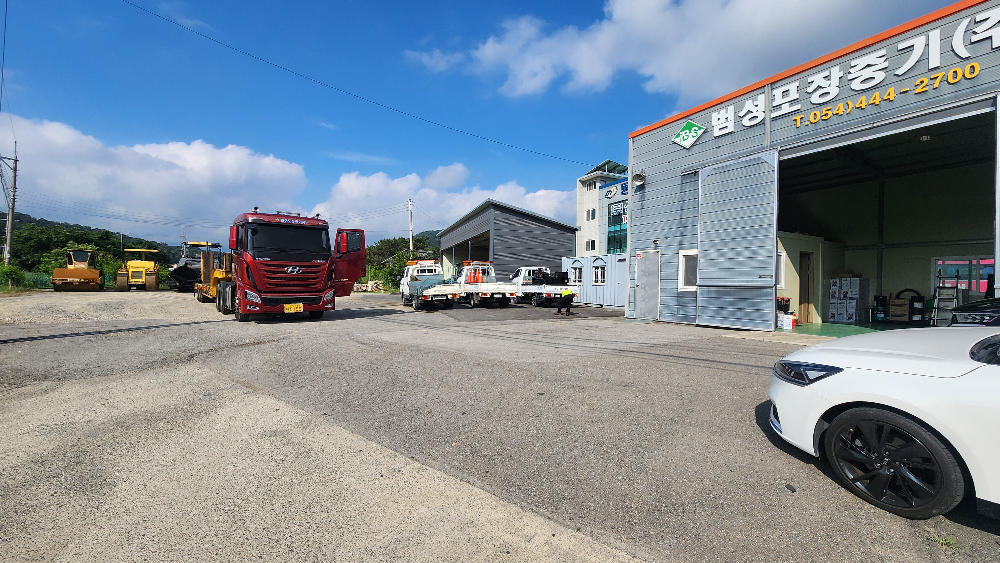

약 20년의 현장 경험으로
정확하고 책임 있는 시공을 합니다.
아스콘포장 · 토공 · 지반조성 · 포장중기대여 전문 기업
범성포장중기(주)는
2007년부터 현장을 지켜온 전문 기업입니다.
범성포장중기(주)는 2007년 설립 이후 약 20년 동안 아스콘포장, 토공, 지반조성, 포장중기대여 분야에서 꾸준히 현장 경험을 쌓아왔습니다.
주 활동지역은 구미와 경북권이며, 현장 조건과 공사 규모에 따라 전국 작업도 가능합니다. 30대 후반 중심의 숙련된 작업자들이 각 현장의 상황에 맞춰 안전하고 완성도 높은 결과물을 제공하겠습니다.
또한 자체 주기장과 장비 관리 체계를 갖추고 있어 장비를 주기적으로 점검하고 관리합니다. 이는 단순히 장비를 보유하는 것을 넘어, 현장에서 안정적인 작업 품질을 유지하기 위한 범성포장중기(주)의 기본 원칙입니다.
시공 후에도 필요한 경우 코어를 뚫어 포장 두께와 시공 상태를 확인하며, 현장 결과물에 대한 사후관리까지 책임감 있게 진행합니다. 눈에 보이는 마감뿐 아니라 보이지 않는 부분까지 점검하는 것을 중요하게 생각합니다.





주요 업무 분야
현장 조건에 맞춘 장비 운용과 숙련된 작업으로 안정적인 결과물을 만듭니다.

아스콘포장
도로, 주차장, 공장 부지 등 현장 조건에 맞춘 포장 시공을 진행합니다.

토공
기초 토목 작업부터 현장 정비까지 안정적인 기반 작업을 수행합니다.

지반조성
시공 전 현장 여건을 고려하여 안정적인 지반 조성 작업을 진행합니다.

포장중기대여
포장 현장에 필요한 장비를 관리하고 현장 상황에 맞게 운용합니다.